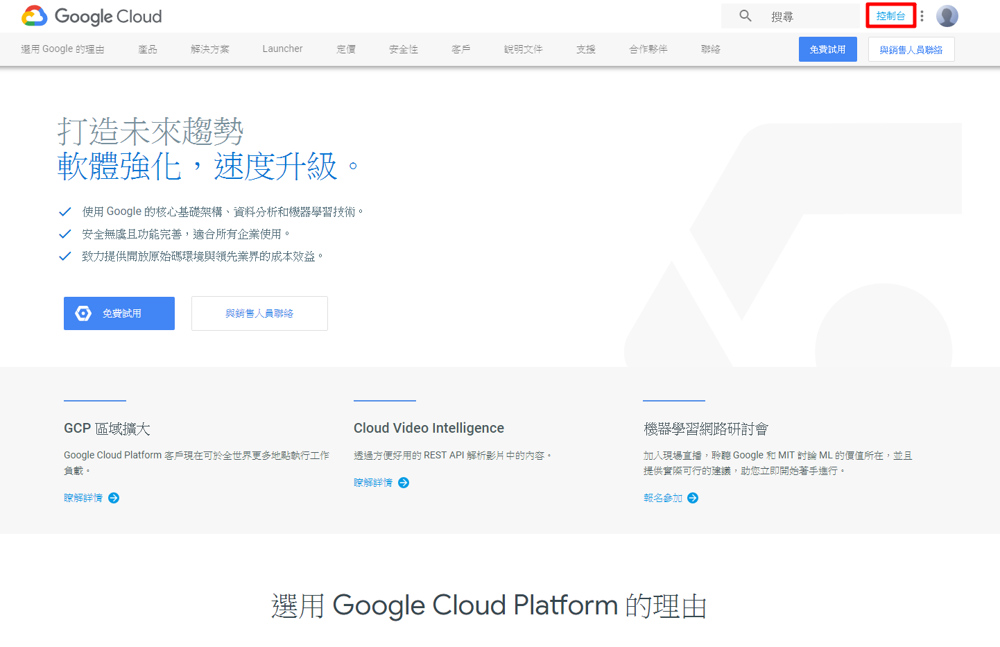
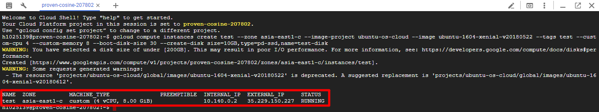
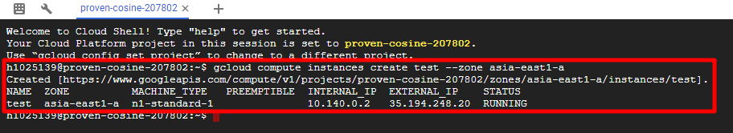
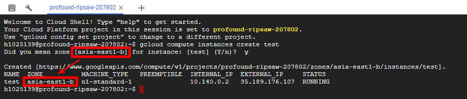
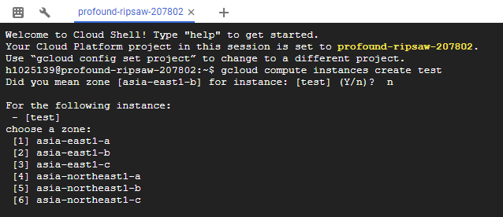
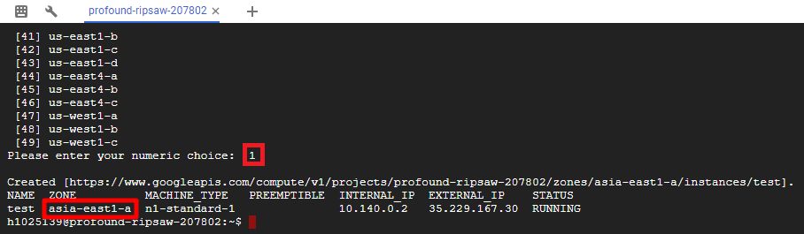
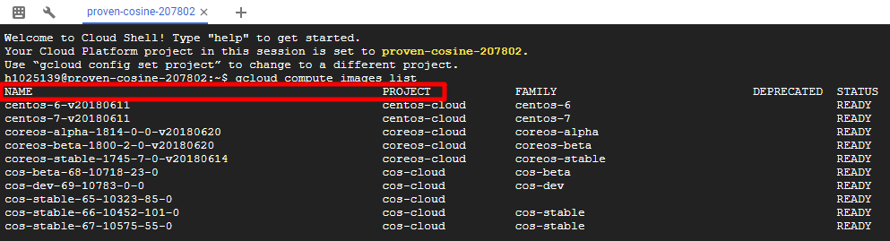
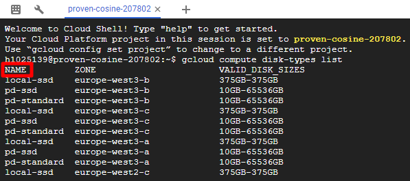
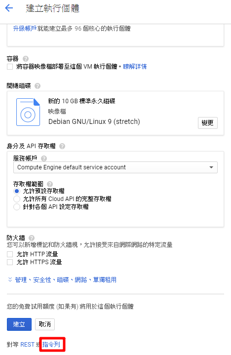
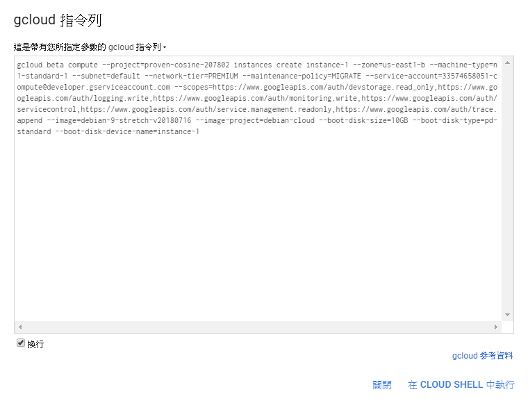

本文章將介紹如何使用指令建立 GCP VM
GCP 更多指令用法可以到連結查看，指令網站連結：https://cloud.google.com/sdk/docs/
本篇開始：
1. 進入 GCP，網址：https://cloud.google.com/
2. 登入 Google 帳號
3. 點擊畫面右上角控制台進入

4. 開啟 Cloud Shell
Cloud Shell：虛擬機裝載了所有您需要的開發工具，它提供了一個持久的 5GB 主目錄並在 Google Cloud 上運行，只需使用瀏覽器或 Google Chromebook 即可完成中大部分工作
在 GCP 控制台中，點擊右上角工具欄上的 Cloud Shell 圖標
啟動 Cloud Shell

啟動畫面

5. 建立 VM
1 | gcloud compute instances create (VM名稱) --zone (區域) --image-project (project) --image (name) --tags (名稱) --custom-cpu (數字) --custom-memory (數字) --boot-disk-size (數字) --create-disk size=(數字單位),type=(硬碟類型),name=(名稱) |
1 | ex：gcloud compute instances create test --zone asia-east1-c --image-project ubuntu-os-cloud --image ubuntu-1604-xenial-v20180522 --tags test --custom-cpu 4 --custom-memory 8 --boot-disk-size 30 --create-disk size=10GB,type=pd-ssd,name=test-disk |
建立成功後訊息

建立 VM 指令分解介紹
創建 VM：( 除了名稱跟區域不設定的值會給預設值 ) 沒有下區域指令會詢問是否在此區域，Did you mean zone [asia-east1-b] for instance: [test] (Y/n)? 回答 y 會直接在這個預設區域，n 會讓你選區域
1 | gcloud compute instances create (name) --zone (區域) |
1 | ex：gcloud compute instances create test --zone asia-east1-a |
有給區域會直接建好

沒給區域指令
1 | ex：gcloud compute instances create test |
回答 y 會直接在預設區域

回答 n 會讓你選區域，輸入想要的區域的數字就會變成該區域了


設定 image：使用 gcloud compute images list 查詢 project 和 image
1 | gcloud compute images list |
選想要使用的 project 和 name

1 | --image-project (project) --image (name) |
1 | ex：gcloud compute instances create gcelab2 --zone us-central1-c --image-project ubuntu-os-cloud --image ubuntu-1604-xenial-v20180522 |
設定網路標記：目前防火牆要先設定好標記
1 | --tags (你設定的標記) |
1 | ex： gcloud compute instances create --tags test |
設定記憶體跟 cpu
1 | --custom-cpu (數字) --custom-memory (數字) |
1 | ex：gcloud compute instances create --custom-cpu 4 --custom-memory 8 |
設定開機硬碟容量：容量沒給單位預設是 GB
1 | --boot-disk-size (數字) |
1 | ex：gcloud compute instances create --boot-disk-size 30GB |
設定開機硬碟類型：
使用 gcloud compute disk-types list 查詢
1 | gcloud compute disk-types list |
選擇想要的硬碟類型

1 | --boot-disk-type (硬碟類型) |
1 | ex：gcloud compute instances create --boot-disk-type pd-ssd |
設定刪除 VM 開機硬碟會保留，預設是會刪除開機硬碟
1 | --no-boot-disk-auto-delete |
設定掛載其他硬碟：容量沒給單位預設是 GB
1 | --create-disk name=(name),type=(硬碟類型),size=(容量) |
1 | ex：gcloud compute instances create --create-disk name=test,type=pd-ssd,size=10GB |
PS：在建立 VM 的最下方會有指令列，點開會有建立 VM 的所有指令，也可以使用這個參考

點擊右下在 CLOUD SHELL 中執行，可以在 Shell 做編輯修改
